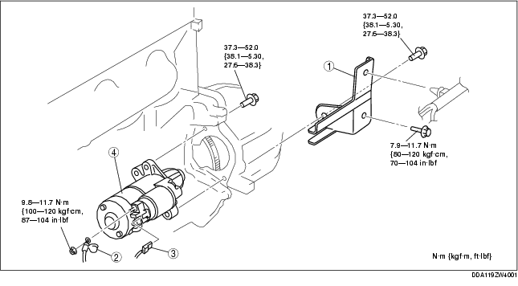

Starter removal/installation [ZY]
- • When the battery cables are connected, touching the vehicle body with starter terminal B will generate sparks. This can cause personal injury, fire, and damage to the electrical components. Always disconnect the negative battery cable before performing the following operation.
1. Disconnect the negative battery cable.
2. Remove in the order indicated in the table.
3. Install in the reverse order of removal.
